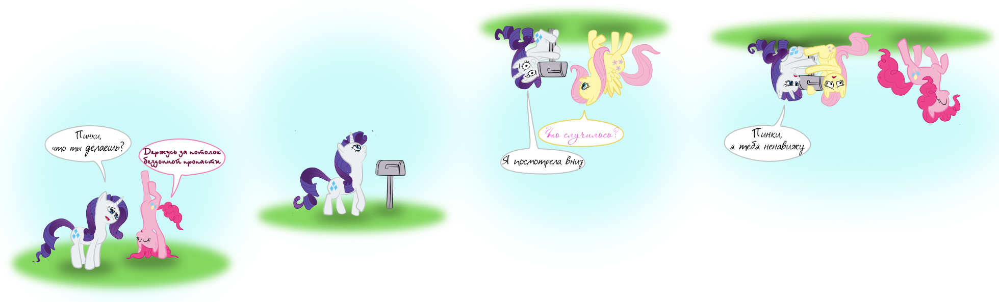
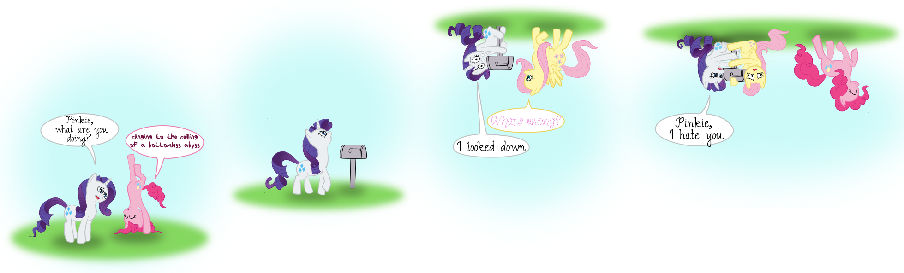

Понифицировал XKCD: Sky. Процесс шёл туго, несколько версий отправились в мусорку.
Ponified XKCD: Sky. It was more difficult then I expected, had to start over a few times.
Попытка 1 / Attempt 1
yandex.disk
peerTube
ipfs
Сначала я скачал GMOD-поней, и попробовал их поанимировать в Blender-е. Быстро выяснилось, что у них недоделанный риг, требует очень кропотливого труда для сколько-нибудь качественной анимации.
At first I downloaded GMOD-ponies and tried to animate them in Blender. It soon turned out their rig was rudimentary and if one was after quality animation it would be very labour consuming.
Попытка 2 / Attempt 2
yandex.disk
peerTube
ipfs
Тогда, я решил повторить палочный стиль самого XKCD, но после тестовой анимации понял, что это выглядит как недоделаная работа, а ещё просто глупо.
Then I decided to mimic stick-figure style of XKCD itself, but test animation proved it to look unfinished and plain stupid.
Попытка 3 / Attempt 3
yandex.disk
peerTube
ipfs
Не сдаваясь, я обратился к 2d анимации, и получил увесистую оплеуху от Blender 2.63, в котором вскрылась нехватка нужных мне инструментов для анимации губ, выливающаяся опять, в горы ручной работы. Справедливости ради, в 2.74 ситуация, кажется, исправилась.
Not willing to give up I switched to 2d animation, and suffered a heavy blow from Blender 2.63, which turned out to be lacking the right tools for lips animation, leaving me with loads of manual work. To be fair, I seem to have seen them in 2.74.
С анимациями не сложилось, нарисовал просто картинку.
That's the story, so I just drew a picture.

